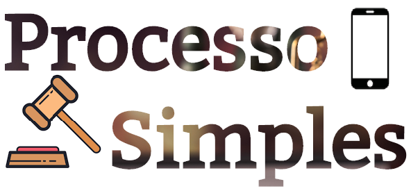

Home
Quem somos?
Contato
Entrar
Como faremos:
Mostraremos os dados
dos processos judiciais
de forma acessível
ajudando as pessoas
a acompanharem
efetivivamente seu
processo através dessa
plataforma unificada
O que queremos:
Possibilitar cidadãos
checar o andamento
de seus processos e
entenderem a situação
sem precisar
saber “juridiquês”